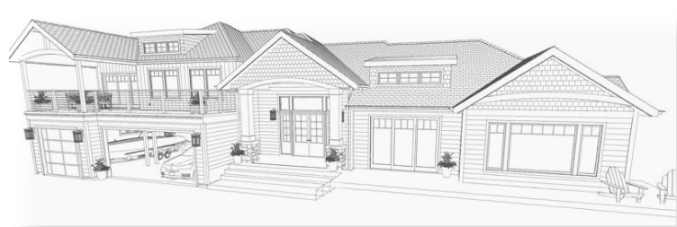

This company's emphasis is all about home remodeling and surveying, whether involving landscape design, having an addition done, or creating a completely new home from scratch. To create a more inviting experience and set the theme throughout the site, I used calm earthy tones and colors along with home interior and 2D renderings of some projects done for clients.
After meeting with the client to get an idea of what their expectations were, I decided to try and find out who their target market was. I created a survey to help gauge the market and from there a persona to help focus what the content should be geared toward.
I narrowed down the target market through the use of surveys and creating a persona. Then I created a sitemap showing the flow of the different pages that would be included in the site. After getting approval from the client of the sitemap, I proceeded to create a rough draft of the written content of the site. Once the content was approved I proceeded to create low-fidelity mockups with wireframes along with a mood board showing the colors, images, and fonts I was planning on using.
The final step prior to actual coding the site was creating a high-fidelity mockup showing what the site would look like in the end.
Visual Studio, HTML5, CSS3, Boostrap, JavaScript, Sass, Adobe XD
3 Weeks